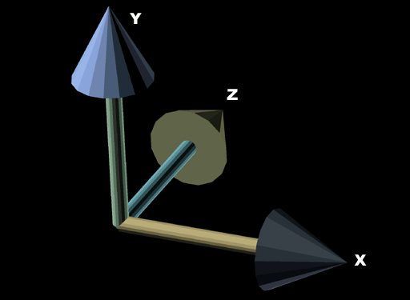

|
3DS Camera Orientation
Question submitted by (23 July 2001)

|
 |
|
 |
| |
I load my 3d-scenes from a .3DS file. And i use
gluLookAt() for camera movement. Promblem is that when
i render my scene it appears oriented somehow wrong
compared to 3dstudio. So i'm wondering what i'm doing
wrong... the camera's up-vector calculations or do i
call the OGL calls in wrong order. Or am i missing
something else.. oh and what is the bank value for the
camera in .3ds file? I hope i described my problem
right... due to my bad english :X. Anyway, tnx.
|
|
 |
|
 |
 |
|
|
| |
I'm not aware of a way to create 3DS emulated look-at matrices through
OpenGL. So, I'll offer an explanation that should help you implement your
own.
A long time ago, a friend once explained a concept to me that finally
allowed me to grasp the concept of how matrices worked, from the inside. Not
just what functions to call to put them together and make them do what I
wanted, but to actually understand what the numbers themselves represented,
and how to manipulate them manually, if I needed to. To put my new knoledge
to the test, I set out on something that had always intimidated me in the
past: generating a look-at matrix.
If you are still intimidated even by a simple 3x3 rotation matrix, I will
attempt to pass this knowledge (and more importantly, the ability to
understand these basics) on to you using common-sense terms rather
than mathematical terms. And yes, along the way, I plan to answer the
question; but the math experts out there might just get a little bored along
the way. The heavy (dare I use the word "millitant"?) math guys may even
feel slighted by my simplistic approach to the following explanation on
matrices. To you, I only ask that you please remember that I'm targeting an
audience that is still very new to matrices.
A simple 3x3 matrix can be thought of as three vectors. Each of these
vectors representing an arrow pointing in the direction of its respective
primary axis:

Looking at figure 1, we have three vectors: the X vector (1, 0, 0), the Y
vector (0, 1, 0) and the Z vector (0, 0, 1). If we arrange these into three
vertical columns, place them side-by-side, we get a matrix that looks like
this:
This should look familar, because it's an identity matrix.
Anything you pass through a matrix (a point, a vector, a dirty pair of
sweaty socks) will be rotated into a world that has axes aligned to the
three vectors in the matrix. Our current identity matrix is the same as
world-space, so rotating from world-space to world-space does nothing.
That's why rotating points through an identity matrix does nothing.
Let's examine a 90-degree clockwise rotation on the Z axis (roll). Try to
visualize what would happen to figure 1 if we did this to those three
arrows. Our X vector will point straight down and our Y vector will point
directly to the right (our z-vector wouldn't move.) Put this in a matrix,
and this is what we get (remember, three vertical columns, X vector, then Y
vector, then Z vector):
The cool thing here is, we've just generated a 90-degree rotation matrix
without using sin() or cos(). This means, that if you pass a vector through
that matrix, it will be rotated 90-degrees clockwise on the Z axis.
If, using standard techniques, we generate any 3x3 matrix that has more
complex rotations (say a 3-degree rotation in X and a 27.8 degree rotation
in Y) we could just as well extract the X, Y and Z vectors from that matrix
and see which way they point. A very common use of this is to extract the Z
vector from a matrix to determine which way is "forward" (I do this to
determine which way to move my character when the user pushes the "go"
button.)
If you extract these three vectors from a matrix, you'll notice an
interesting fact about them. They are all perpendicular to each other. In
other words, the X vector will be perpendicular to the Y and Z vectors, the
Y vector will be perpendicular to the X and Z vectors, and the Z vector will
be perpendicular to the X and Y vectors. You should note that this is only
true for orthogonal 3x3 matrices (actually, this is what defines a matrix as
being orthogonal.)
Before I continue, I'll cover an essential vector-specific topic that is
important to fully understand the creation of a look-at matrix. A vector
cross product has a few properties, but one of the primary uses is to create
a vector that is perpendicular to two other vectors. This means that if we
end up with a matrix that is missing the Y vector, we can extract the X and
Z vectors and perform a cross product on them to get the Y vector. We can
now re-create a whole 3x3 matrix that was once missing a vector.
Creating a look-at matrix (in the way that I'm going to show) is little more
than a bit of detective work and a few clever cross products.
Our goal is to create three vectors, put them together and end up with a 3x3
matrix that acts as a look-at matrix. In order to do this, we'll need a
starting point: the look-at vector itself. Remember how we can extract the Z
vector to determine which way the player is facing? Well, we can invert that
logic and follow along with the assumption that our look-at matrix will have
a Z vector that is exactly the same as our input look-at vector.
That gets us the Z vector for our matrix. The next step is to generate our X
and Y vectors. For the moment, let's assume "UP" is always "UP". We'll
temporarily fill our look-at matrix with an up vector of.. well.. UP (0, 1,
0).
Aha! Now that we have two of the three vectors, we can use the handy cross
product to get the third (X) vector. So by crossing our Y and Z vectors, we
calculate the X vector. Smashing. But we're not done yet. Our Y vector was
only a temporary. If, for example, our input look-at vector pointed forward
and slightly down, then our Z and X vectors would be correct, but our Y
vector isn't. Try to visualize the following using figure 1: Our Y vector
points directly UP, but if the input look-at vector is tilted down a little,
then our Y vector should be tilted forward a little (as you can see, I'm
trying very dilligently to confuse you. :) We've got two correct vectors (X
and Z) with which we can use to create the actual Y vector. Cross product to
the rescue.
Hopefully, at this point, things are making sense. If not, one of two things
has happened: (1) you stumbled across a link to this page while performing a
web search for SEX, PORNOGRAPHY or PAMELA ANDERSON (yes, those words
actually appear in this article, can you find them?) or (2) I suck at
explaining matrices.
Now to throw a wrench into the works. What if our look-at vector points
directly up? Well, we'll be creating our temporary Y vector (which also
points directly up) and when we try to use the cross product on these two
vectos (in hopes of findin the X vector) we find that it doesn't work. This,
my friends is called the degernerate case. Actually, the degenerate case
isn't only when the two vectors only point directly up, but when the angle
between them approaches 0 or 180. So, what is one to do? There are a number
of options. What you want, Mr. Confused, is the specific option that 3DS has
chosen.
So when I sat down to create this routine, I did so with the intention of
duplicating 3DS behavior. Doing this simply meant playing with 3DS and
playing with my routine until I figured out what 3DS was doing. Here's what
I came up with.
// Build the Y vector of the matrix (handle the degenerate case
// in the way that 3DS does) -- This is not the TRUE vector, only
// a reference vector.
Vector yAxis;
if (fabs(lookatVector.x) < EPSILON && fabs(lookatVector.z) < EPSILON)
{
yAxis = Vector(-lookatVector.y, 0, 0);
}
else
{
yAxis = Vector(0, 1, 0);
}
|
Quite simply, what this code segment does, is examine the input look-at
vector and detect the degenerate case, then build the proper Y vector based
on my examination of how 3DS handled the degernerate case.
This will give us the proper look-at matrix, but we're still not quite done
yet. The look-at matrix simply makes sure that, once rotated by the matrix,
we are looking in the direction of the look-at vector. But that only gets us
looking in the direction, there's a final rotation that has gone completely
ignored. And this is what is referred to ask the "bank" (or "Roll") angle.
This simply controls the rotation on the look-at vector.
For example, if we create a look-at vector that points directly behind us
(0, 0, -1) then we've only asked to look in a certain direction -- we
haven't completely specified all aspects of rotation. If, standing in a room
you turn to your left to look at a book case. If you were able to do
cartwheels in place (I'd pay money to see that) couldn't you then do so, and
remain looking at that same book case? The bank angle allows us control over
that final aspect of rotations for a complete look-at matrix.
In closing, I should mention that this may not be exactly what 3DS does. It
is based on my observations of how 3DS handles specific cases (purposely
setup to help me determine how it handles the degernerate cases.) However,
from my uses, it worked pretty darned well. You might be able to find a
reference on the net that explains exactly how 3DS handles the degenerate
case (or some friendly reader will post it in the comments below.)
Response provided by Paul Nettle
|
|
|
|
|
This article was originally an entry in flipCode's Ask Midnight, a Question and Answer column with Paul Nettle that's no longer active.
|


 Re: 3DS Camera Orientation by SirKnight
Re: 3DS Camera Orientation by SirKnight